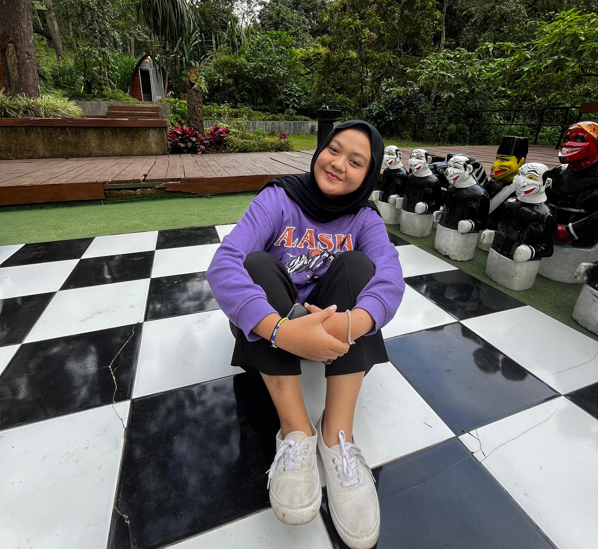

Arsitektur Jaringan Dan Komputer
Halo perkenalkan nama saya Faisya Cahyarani Pidieanti dari kelas kelas D3SI-47-02 NIM 607012300004 Mahasiswa semester 2 jurusan D3 Sistem Informasi di Telkom Uniersity


Halo perkenalkan nama saya Faisya Cahyarani Pidieanti dari kelas kelas D3SI-47-02 NIM 607012300004 Mahasiswa semester 2 jurusan D3 Sistem Informasi di Telkom Uniersity
Jaringan komputer mengacu pada perangkat komputasi yang saling terhubung serta dapat bertukar data dan berbagi sumber daya satu sama lain. Perangkat jaringan ini menggunakan sistem aturan, yang disebut sebagai protokol komunikasi, untuk mentransmisikan informasi melalui teknologi fisik atau nirkabel.
Perangkat Perantara merupakan perangkat yang berfungsi sebagai perantara yang menghubungkan perangat komputer atau perangkat ujung (end device) lainnya dalam suatu jaringan komputer.
Perangkat akhir adalah perangkat keras yang mendukung web yang berfungsi sebagai sumber atau tujuan data yang ditransfer melalui jaringan. Misalnya, workstation, laptop, komputer desktop, printer, pemindai, tablet, atau ponsel.

Hub adalah suatu perangkat yang memiliki fungsi untuk menghubungkan komputer yang satu dengan yang lain dalam lingkup jaringan yang sama.
Hub pada dasarnya adalah repeater multi-port. Sebuah hub yang menghubungkan beberapa kabel yang berasal dari cabang yang berbeda, misalnya konektor dalam topologi star yang menghubungkan stasiun yang berbeda. Hub tidak dapat memfilter data, sehingga paket data dikirim ke semua perangkat yang terhubung. Dengan kata lain, domain tumbukan semua host yang terhubung melalui Hub tetap satu. Selain itu, mereka tidak memiliki kecerdasan untuk menemukan jalur terbaik bagi paket data yang menyebabkan inefisiensi dan pemborosan.